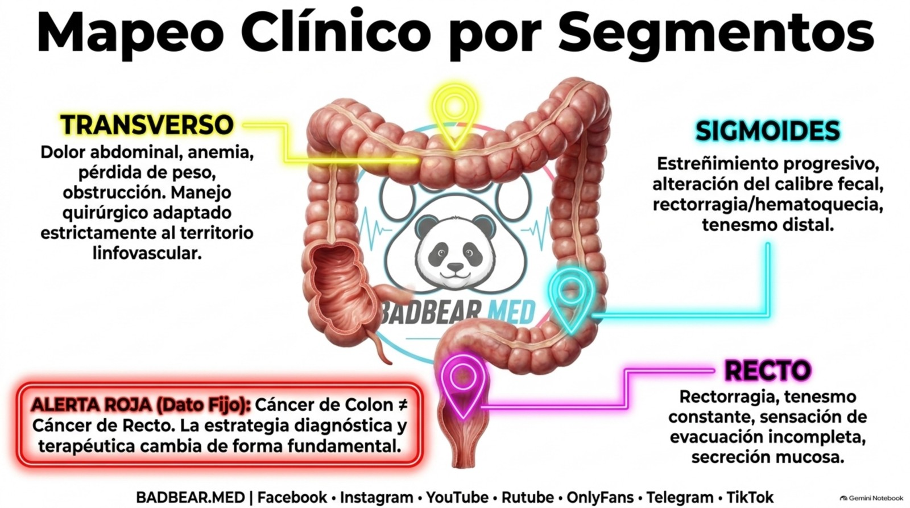
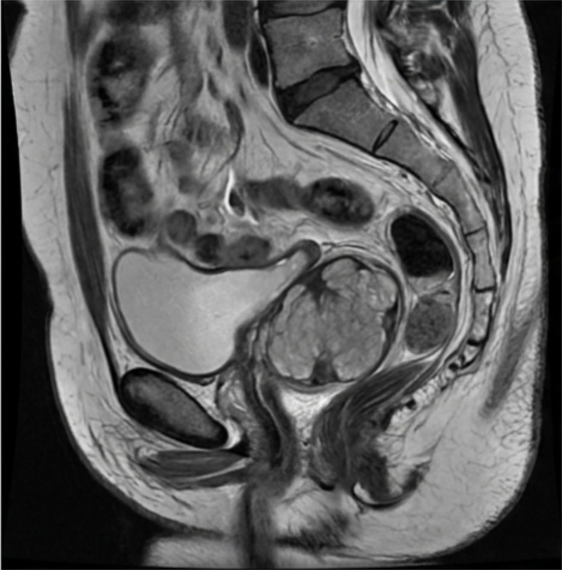

Tratamiento del cáncer de colon según zona y estadio
Colectomías por territorio, principios oncológicos, adyuvancia y recto.
Fuentes rápidas del capítulo
Acceso directo a guías, artículos y revisiones internacionales utilizadas en este tema.
La operación se diseña para retirar el tumor con márgenes adecuados y su territorio linfovascular, preservando intestino funcional y una reconstrucción segura. La zona orienta el procedimiento, pero el estadio, la irrigación, las lesiones sincrónicas, la genética y el estado del paciente pueden modificarlo. La tabla por segmentos es un mapa de estudio, no una prescripción para todos los tumores. [1,2]
1. Antes de elegir la colectomía
Se confirma histología cuando es posible, se localiza con precisión la lesión y se evalúa el colon restante. El tatuaje endoscópico se utiliza de manera planificada en lesiones que podrían ser difíciles de localizar, especialmente en cirugía mínimamente invasiva. La exploración completa busca lesiones sincrónicas; si una obstrucción lo impide, se completa el estudio en el momento apropiado.
La estadificación suele incluir TC de tórax, abdomen y pelvis, pruebas de laboratorio y CEA basal. El CEA sirve para pronóstico y seguimiento en ciertos contextos, no descarta cáncer si es normal ni es una prueba de tamizaje poblacional. Se evalúan MMR/MSI, nutrición, capacidad funcional, comorbilidades y necesidad de valoración genética. [1,2]
2. Principios oncológicos de la resección
En una colectomía oncológica se procura una resección con márgenes libres, tejido mesocólico correspondiente y ganglios de drenaje regional. Los márgenes longitudinales suelen incluir varios centímetros de colon sano, frecuentemente alrededor de 5–7 cm cuando la anatomía lo permite; no se reduce el procedimiento a cumplir una distancia si el drenaje queda fuera del campo.
Se recomienda examinar al menos 12 ganglios para una estadificación adecuada en el contexto habitual del cáncer de colon resecado. Encontrar menos requiere revisar procesamiento de la pieza y considerar el dato al estimar riesgo. Examinar 12 no asegura curación ni prueba que todos los ganglios del paciente estén libres. La calidad incluye márgenes, plano mesocólico e integridad de la resección. [1]
La disección central o extendida no se aplica indiscriminadamente. Excisión mesocólica completa describe calidad del plano de resección y no significa automáticamente ligadura vascular máxima en cada caso. Ganglios sospechosos fuera del campo habitual pueden requerir valoración específica. Un tumor T4b adherido a otro órgano se reseca en bloque cuando corresponde: separar la adherencia puede violar el tumor.
3. Tabla de operaciones por segmento

| Localización | Procedimiento habitual o alternativas | Razonamiento y matices |
|---|---|---|
| Ciego y ascendente | Hemicolectomía derecha | Retira territorio ileocólico y otros pedículos pertinentes; extensión distal según tumor y anatomía. |
| Flexura hepática y transverso proximal | Hemicolectomía derecha extendida u otra resección planificada | Puede incluir territorio de cólica media; no todas las lesiones precisan la misma extensión. |
| Transverso medio | Colectomía transversa o hemicolectomía extendida seleccionada | La elección depende de vasos, drenaje, márgenes y reconstrucción funcional. |
| Flexura esplénica | Resección segmentaria de flexura, colectomía izquierda o alternativa extendida | Se individualiza por irrigación y ganglios; no exige siempre colectomía subtotal. |
| Descendente | Hemicolectomía izquierda o resección segmentaria oncológica seleccionada | Considera ramas de cólica izquierda y territorio real de drenaje. |
| Sigmoides | Sigmoidectomía oncológica | Mesosigmoides y pedículos pertinentes; reconstrucción colorrectal según situación. |
| Tumores múltiples, algunos síndromes hereditarios o circunstancias especiales | Colectomía subtotal o total en casos seleccionados | Equilibrar riesgo de nuevos tumores, edad, función y necesidad de vigilancia. |
| Unión rectosigmoidea | Estrategia según localización anatómica real | RM, relación con reflexión peritoneal y definición de recto evitan clasificar solo por centímetros. |
La vascularización presenta variantes. Ileocólica, cólica derecha —que puede no existir como tronco independiente—, cólica media, cólica izquierda y ramas sigmoideas determinan la perfusión y el campo ganglionar. La circulación marginal conecta territorios, pero no garantiza que cualquier anastomosis esté bien irrigada.
4. Anastomosis, ostomía y vía de abordaje
Tras hemicolectomía derecha puede realizarse anastomosis ileocólica; tras resecciones izquierdas, colocolónica o colorrectal según extensión. La decisión de anastomosar depende de perfusión, tensión, contaminación, estabilidad, nutrición y otros riesgos. Una ostomía temporal o definitiva responde a seguridad y anatomía, no solo al lado del colon.
Laparoscopia, robótica y cirugía abierta son vías de acceso. La prioridad es la calidad oncológica y seguridad, con experiencia del equipo. Un procedimiento mínimamente invasivo puede convertirse a abierto si es necesario; la conversión no demuestra por sí misma fracaso. El tumor invasor de órganos vecinos puede requerir una resección multivisceral planificada.
5. Tratamiento por estadio: la zona no decide la quimioterapia
| Situación | Enfoque general |
|---|---|
| Lesión mucosa o pólipo sin invasión relevante | Resección endoscópica apropiada y evaluación histológica; vigilancia según lesión. |
| Cáncer T1 en pólipo | Resección endoscópica puede ser suficiente en bajo riesgo y resección completa; factores adversos pueden requerir cirugía. |
| Estadio I | Habitualmente resección quirúrgica; no quimioterapia adyuvante rutinaria. |
| Estadio II | Cirugía y valoración individual de riesgo, MMR/MSI y beneficio de adyuvancia. |
| Estadio III | Cirugía y quimioterapia adyuvante en pacientes aptos, con esquema y duración individualizados. |
| Estadio IV | Tratamiento sistémico y valoración de resección o tratamiento local de metástasis en casos seleccionados. |
Invasión linfovascular, margen comprometido o incierto, pobre diferenciación en contextos pertinentes, budding y profundidad ayudan a valorar riesgo en T1. En estadio II, T4, obstrucción, perforación o muestreo ganglionar insuficiente pueden elevar riesgo, pero la decisión no consiste en dar quimioterapia automáticamente por un solo dato. MMR/MSI puede modificar expectativas de beneficio y elección de tratamientos. [1,2]
FOLFOX y CAPOX son esquemas frecuentes de adyuvancia en escenarios apropiados; la duración depende de riesgo, esquema y tolerancia. En enfermedad avanzada se consideran biomarcadores, inmunoterapia en dMMR/MSI-H, terapias dirigidas cuando corresponde y resecabilidad de metástasis. La lateralidad puede influir en ciertas decisiones sistémicas, pero nunca reemplaza los estudios moleculares.
6. Obstrucción y perforación: cambia la prioridad
En obstrucción se valoran estabilidad, grado de dilatación, viabilidad y disponibilidad de experiencia. Las opciones incluyen resección, derivación o prótesis colónica en pacientes seleccionados como puente o paliación. Una prótesis no se coloca indiscriminadamente y se evita ante perforación; la discusión incluye riesgos y consecuencias oncológicas.
Perforación y sepsis requieren control de foco urgente. Anastomosis, procedimiento de Hartmann u otras estrategias dependen de contaminación, perfusión y estado del paciente. «Tumor izquierdo» no significa automáticamente Hartmann y «tumor derecho» no garantiza una anastomosis segura. Después se completa estadificación y tratamiento oncológico.
7. Por qué el recto merece otra estrategia
El recto está dentro de la pelvis y rodeado por mesorrecto, fascias, órganos y esfínteres. La RM pélvica evalúa extensión local, margen circunferencial amenazado, invasión vascular extramural y ganglios, entre otros aspectos. Se integra con tacto, endoscopia, altura y estadificación a distancia.

Resección anterior, anterior baja y amputación abdominoperineal responden a localización y posibilidad de preservación funcional con margen adecuado. La excisión total del mesorrecto es esencial en los casos pertinentes. Quimiorradioterapia o terapia neoadyuvante total pueden indicarse según riesgo y estadio; no todos los tumores de recto reciben el mismo tratamiento previo. MMR/MSI, respuesta y protocolos especializados también pueden modificar estrategias. Preservación de órgano tras respuesta completa requiere selección y seguimiento estricto, no simplemente omitir cirugía.
8. Ejemplo de discusión de un caso
En un adenocarcinoma del ascendente, el razonamiento no termina en «derecha». Se confirma sitio, se descartan lesiones sincrónicas, se estudia extensión y se planea una resección del drenaje correspondiente con reconstrucción segura. La pieza definirá T, N, márgenes y factores de riesgo que determinan adyuvancia.
En un tumor de flexura esplénica, escoger una operación más extensa no garantiza mejor resultado. La selección debe asegurar control oncológico y valorar función y riesgo. La respuesta académica correcta explica por qué se elige un campo, no memoriza una única colectomía para todos.
Repaso final · BADBEAR.MED FIJA:
- Segmento orienta la colectomía; estadio y biomarcadores orientan el tratamiento global.
- Al menos 12 ganglios apoya una estadificación adecuada; no equivale a curación.
- Flexuras y transverso requieren individualizar la extensión.
- Anastomosis exige perfusión y seguridad, no una regla basada en derecha/izquierda.
- T4b: considerar resección en bloque sin separar una adherencia tumoral.
- Recto requiere evaluación pélvica y estrategia propia; neoadyuvancia no es idéntica en todos.
Bibliografía y material de apoyo
- Vogel JD, et al. ASCRS Clinical Practice Guidelines for the Management of Colon Cancer. Dis Colon Rectum. 2022;65:148–177. DOI 10.1097/DCR.0000000000002323.
- National Cancer Institute. Colon Cancer Treatment, PDQ profesional. Tratamiento de colon.
- National Cancer Institute. Rectal Cancer Treatment, PDQ profesional. Tratamiento de recto.
- Material aportado a BADBEAR.MED, páginas 7–9. PDF aportado.
Material de estudio elaborado para la rotación. La atención clínica requiere valoración individual y protocolos del equipo tratante. Las imágenes del material aportado se utilizan como apoyo docente; no sustituyen un estudio clínico completo.